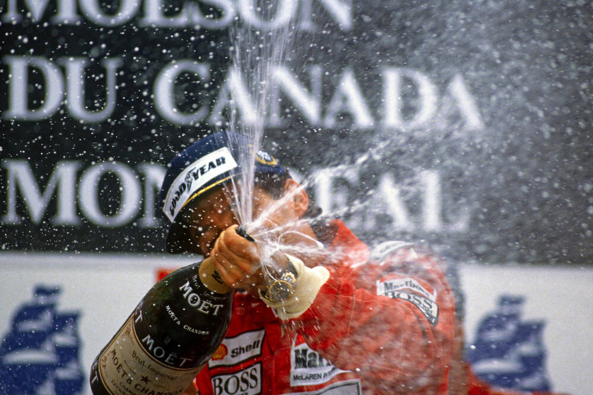
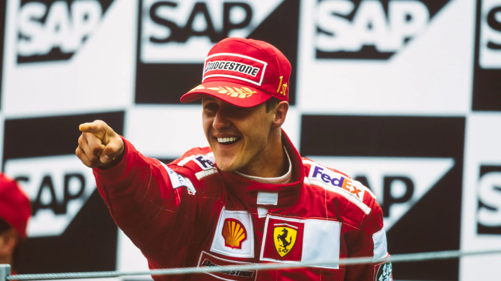

Ayrton Senna a kanadai Nagydíjon, 1991 – háromszoros F1 világbajnok
Az F1 legnagyobb hősei
A Formula 1 történelmét néhány kivételes tehetség határozta meg. Bátorságukkal, precizitásukkal és versenyszeretetükkel ők emelték a sportot a legmagasabb szintre. Mindannyiukban közös volt az a megszállottság, amely a legjobb pilótákat elkülöníti a jóktól.

Michael Schumacher, - a dobogó tetején

Max Verstappen Miamiban, 2022 – a jelenlegi domináns versenyző
Háromszoros világbajnok (1988, 1990, 1991). Brazília büszkesége, az esős futamok mestere. Páratlan egylap-ideje és versenyzési intelligenciája miatt sokan tartják minden idők legjobb F1-es versenyzőjének. 1994-ben Imolában tragikusan elhunyt.
3× BajnokHétszeres világbajnok, ebből ötöt egymás után Ferrarival szerzett (2000–2004). Megdöntötte Fangio rekordját. 91 futamgyőzelemmel vonult vissza. Fizikai felkészültsége és versenystratégiai érzéke messze megelőzte korát.
7× BajnokAz összes idők legsikeresebb F1-es pilótája: 7 bajnoki cím, 103+ futamgyőzelem, 100+ pole pozíció. 2025-ben Ferrarihoz igazolt, hogy megkísérelje a 8. bajnoki cím megszerzését.
7× BajnokNégyszeres világbajnok. 2021-ben szerezte első címét Abu Dhabiban, drámai körülmények között. 2022–23-ban rekordszámú futamgyőzelemmel uralta a szezont. 2024-ben is bajnok lett, visszaeső Red Bull-lal.
4× BajnokArgentin mester, öt F1 bajnoki cím négy különböző csapattal. Az 50-es évek versenyzési definícióját felülírta. Rekordját Schumacher döntötte meg fél évszázaddal később.
5× BajnokMi tette őket különlegessé?
A legjobbak közös vonása nem csupán a tehetség volt – hanem a megszállottság. Senna esőben szinte transzcendens állapotban autózott. Schumacher a gyári csapatot szó szerint felépítette a semmiből. Hamilton a pilótafülkén kívül is egyedi hangot ütött meg sportolóként.
Verstappen a megbízhatóság és nyers sebesség kombinációját hozta el generációval korábban, mint várta bárki. Mindannyiuk közös nevezője: a folyamatos fejlődés igénye és a győzelem iránti szenvedély.
„A sebesség szenvedély. A bajnokság megszállottság. Az örökség legenda."